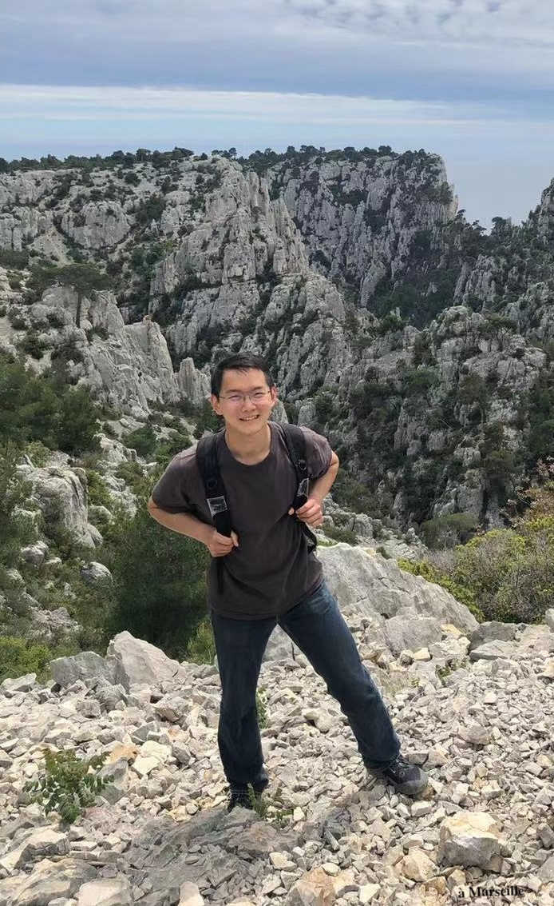

I am a postdoc at KTH, working with Petter Brändén in the combinatorics group. I am broadly interested in geometry and combinatorics, especially geometric inequalities of mixed volumes, log-concavity phenomena in matroid theory, Lorentzian polynomials, and volume polynomials.
Previously, I received my Ph.D. from Princeton University, where I was advised by Ramon van Handel. Before that, I studied at École Polytechnique and in the SCGY program at the University of Science and Technology of China.
Email: shoudawang@alumni.princeton.edu
This section lists papers developed from proofs first obtained by AI models. My collaborators and I then checked, digested, rewrote the arguments, and generalized the results to make them more meaningful to a human audience. We submit these papers for publication, not to claim credit for the proofs, but to have the work peer reviewed and help integrate the results into the shared mathematical knowledge of our research community, in the same spirit as Tao’s discussion in Mathematics in the age of AI.
The papers in the previous section represent research in which most or all of the mathematical ideas were developed by my collaborators and me without AI assistance. For these papers, the role of AI was largely limited to useful but secondary tasks such as checking proofs, assisting with numerical exploration, finding references, fixing typos, etc. I began using LLMs for my papers in summer 2026. Every preprint I have posted since then includes an AI disclosure.
I have endorsed the declaration A Severe Misalignment of AI in Mathematics and I believe that thoroughly digesting nice AI results and writing them up for a human audience is a useful complement to the traditional practice of mathematics. In the long run, I envision that AI tools will significantly reduce the emphasis on problem solving in mathematics, making understanding more important than ever.